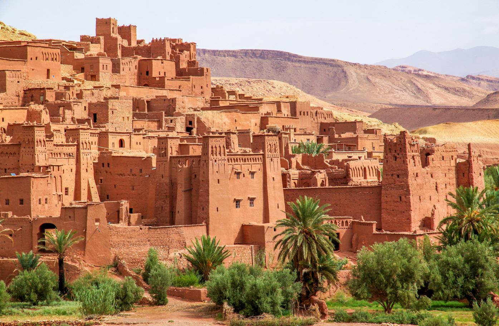
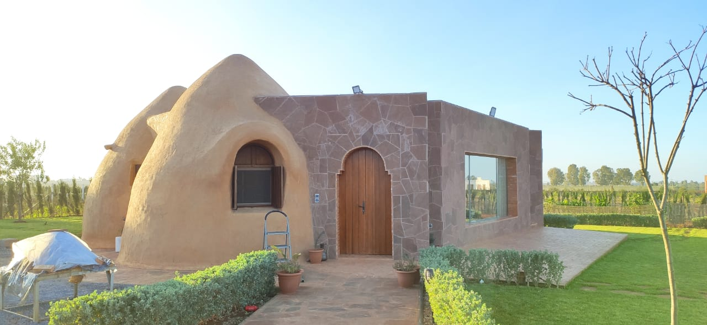

고정관념 깨기
"문명이 발달하지 않았기 때문에 사막 근처 흙벽돌집에서 사는 것이다."
흙벽돌집은 결코 낙후된 기술이 아닌, 에어컨 없이 50도의 불볕더위를 이겨내는 가장 정교한 기후 적응의 결과물입니다.

images/culture_mudhouse.jpg 사진 위치
모로코 흙벽돌집
건조 기후 적응
두꺼운 흙벽으로 낮의 뜨거운 열기를 차단하고, 밤의 한기를 막아주는 천연 단열 구조입니다.

images/eco_building.jpg 사진 위치
현대 친환경 건축
생태 건축의 계승
전통 흙공법을 현대적으로 계승하여 에어컨과 탄소 배출 없이 실내 온도를 유지하는 미래형 건축으로 세계 건축계가 주목하고 있습니다.
💡 지리적 가치 도출:
아프리카의 흙벽돌집은 결핍의 산물이 아니라, 각 지역의 기후 환경에 능동적으로 적응한 것이다.